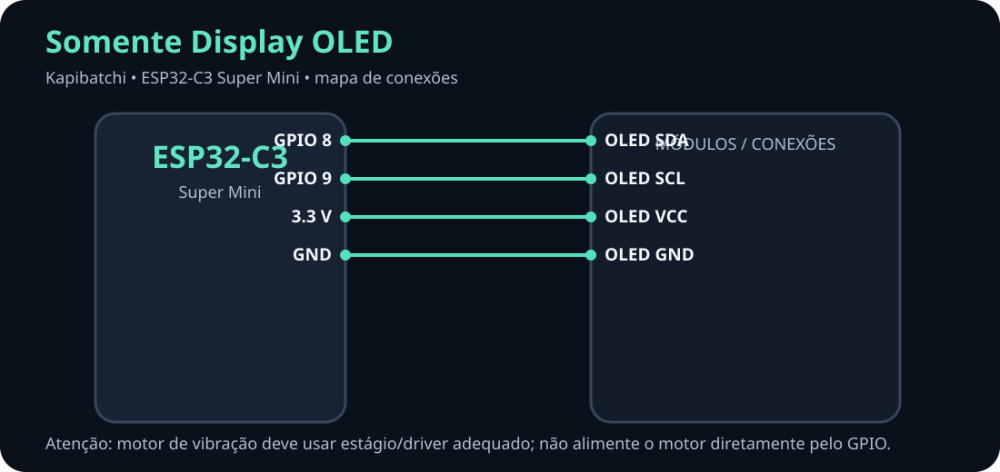
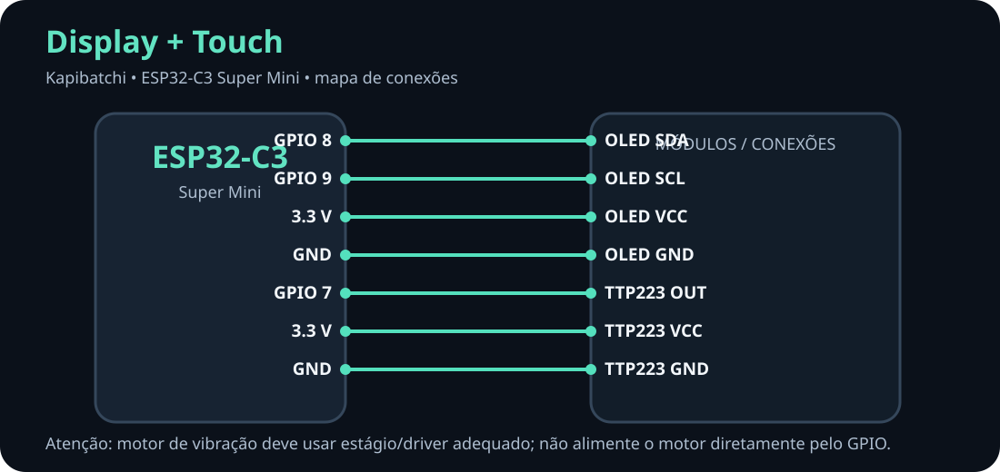
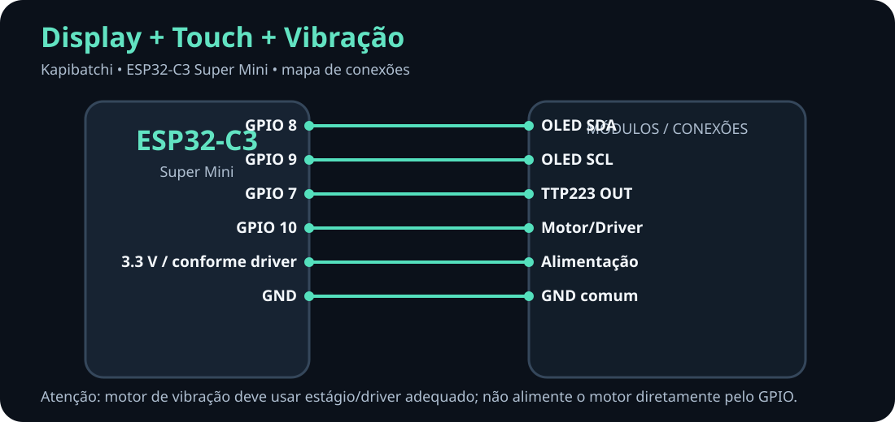
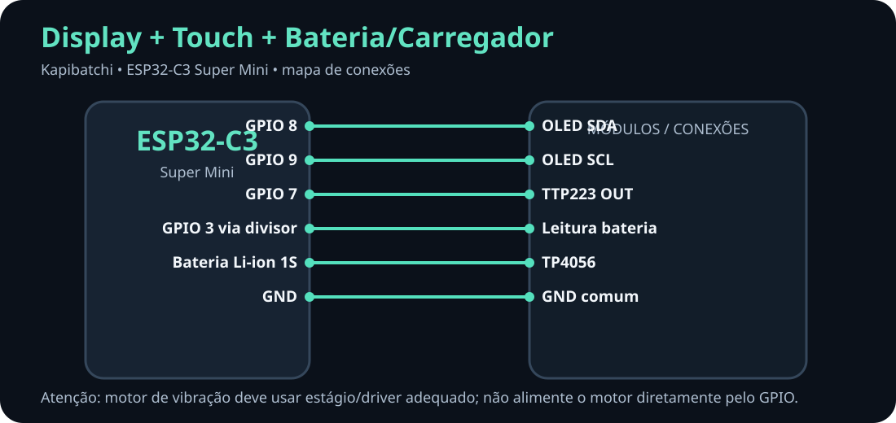
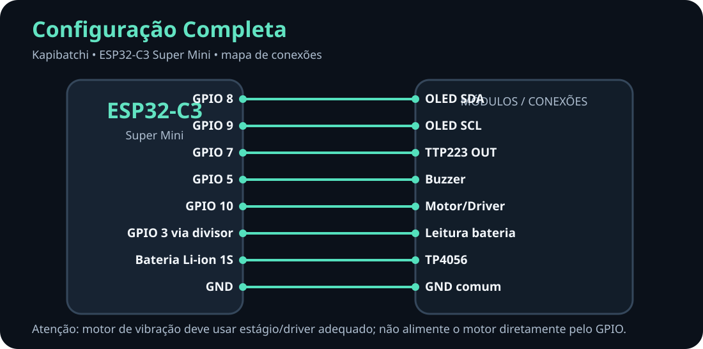

PROJETO 21 • ESP32-C3
Kapibatchi
Guia visual de montagem. Escolha abaixo a configuração do seu Kapibatchi para visualizar as ligações.
OPÇÃO 1
Somente Display
OLED I²C 128×64.
OPÇÃO 2
Display + Touch
OLED e sensor capacitivo TTP223.
OPÇÃO 3
Display + Touch + Vibração
Inclui saída para o estágio de acionamento do motor.
OPÇÃO 4
Display + Touch + Bateria
Inclui bateria Li-ion 1S, TP4056 e leitura da bateria.
OPÇÃO 5
Configuração Completa
OLED, touch, buzzer, vibração, bateria e carregador.
Somente Display OLED

Display + Touch

Display + Touch + Vibração

Display + Touch + Bateria/Carregador

Configuração Completa

Pinagem oficial desta versão
| Função | ESP32-C3 |
|---|---|
| OLED SDA | GPIO 8 |
| OLED SCL | GPIO 9 |
| Touch TTP223 | GPIO 7 |
| Buzzer | GPIO 5 |
| Vibração | GPIO 10 |
| Bateria ADC | GPIO 3 |
Importante: o GPIO 10 é o sinal de controle da vibração. O motor deve ser acionado por transistor/driver apropriado. A leitura da bateria no GPIO 3 deve usar o divisor resistivo previsto no projeto.